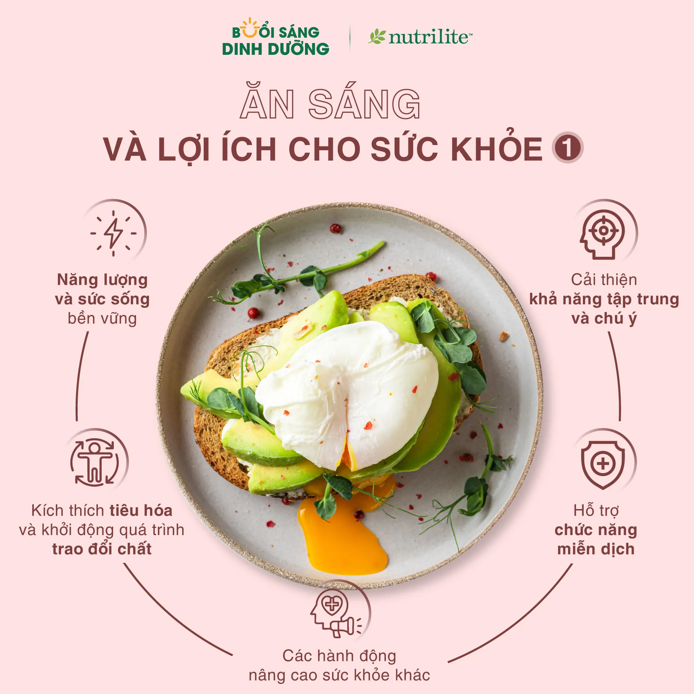

Ăn Sáng Và Những Lợi Ích Cho Sức Khỏe
1. Năng lượng và sức sống bền vững
Ăn sáng cung cấp nguồn năng lượng ổn định giúp bạn duy trì sức sống và hiệu suất suốt cả ngày.
2. Kích thích tiêu hóa và khởi động quá trình trao đổi chất
Khởi động quá trình phân hủy chất dinh dưỡng để hấp thụ và sản xuất năng lượng hiệu quả hơn.
3. Cải thiện khả năng tập trung và chú ý
Các chất dinh dưỡng thiết yếu từ bữa sáng giúp cải thiện trí nhớ, tâm trạng, nhận thức và tăng cường sự tập trung.
4. Hỗ trợ chức năng miễn dịch
Bữa sáng cung cấp vitamin, khoáng chất và chất chống oxy hóa cần thiết để tăng cường hệ miễn dịch.
5. Các hành động nâng cao sức khỏe khác
Thiết lập tâm trạng tích cực cho ngày mới, giúp đưa ra lựa chọn thực phẩm tốt hơn và nâng cao sức khỏe tổng thể.
Nguồn:

- The role of breakfast in health: definition and criteria for a quality breakfast. J Acad Nutr Diet. 2014; 114:S8-S26.
- Barr SI, DiFrancesco L, Fulgoni VL, 3rd.
- Astbury NM, Taylor MA, Macdonald IA. J Nutr. 2011; 141: 1381-1389.
- Pereira MA, Erickson E, McKee P, et al. J Nutr. 2011; 141: 163-168.